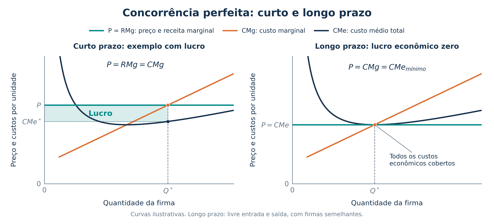
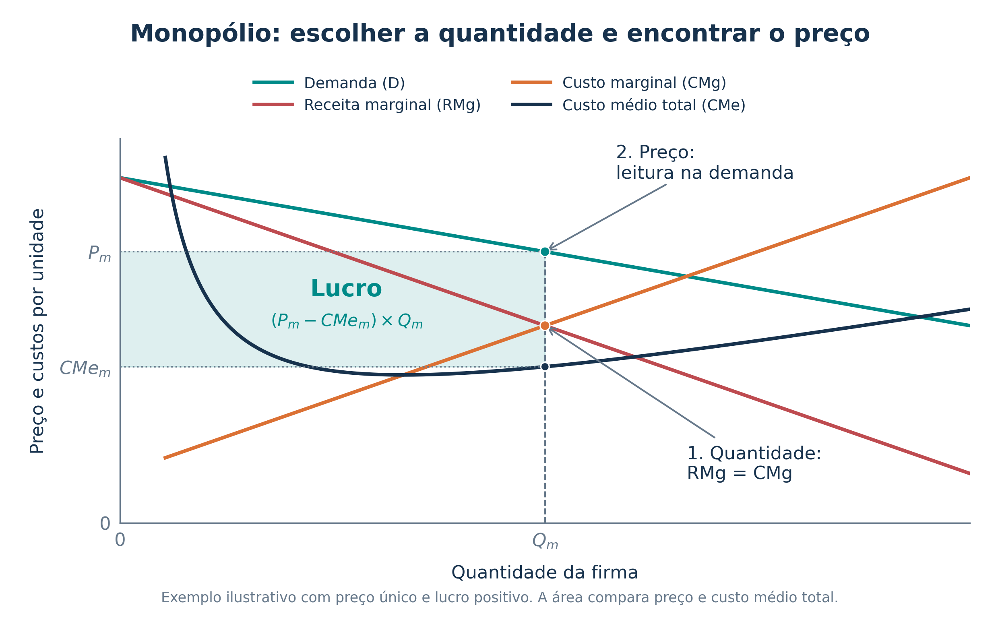

Aula 13 - Estruturas de mercado: revisão básica
01 - Quatro nomes para guardar
03 - Quando o poder está na compra
04 - Receita marginal, custo marginal e lucro
05 - Concorrência perfeita no curto prazo
06 - Gráfico: concorrência perfeita
07 - Concorrência perfeita no longo prazo
08 - Monopólio: quantidade e preço
09 - Gráfico: escolha e lucro do monopolista
Antes de classificar um mercado, pergunte: estamos olhando para quem vende ou para quem compra? Depois, identifique se há um ou poucos agentes.
| Estrutura | Definição básica | Lado observado |
|---|---|---|
| Monopólio | Um único vendedor, sem substitutos próximos para seu produto | Venda |
| Oligopólio | Poucos vendedores relevantes; a decisão de um afeta os demais | Venda |
| Monopsônio | Um único comprador | Compra |
| Oligopsônio | Poucos compradores relevantes | Compra |
Para memorizar: mono lembra um; oligo lembra poucos. Monopólio e oligopólio: vendedores. Monopsônio e oligopsônio: compradores.
A classificação sempre se refere ao mercado analisado. Uma empresa pode ser compradora de matéria-prima e vendedora do produto final.
| Estrutura | Vendedores | Produto | Entrada de firmas | Preço |
|---|---|---|---|---|
| Concorrência perfeita | Muitos | Homogêneo | Livre | Firma aceita o preço de mercado |
| Monopólio | Um | Sem substitutos próximos | Barreiras protegem o único vendedor | Poder de preço, limitado pela demanda |
| Oligopólio | Poucos relevantes | Homogêneo ou diferenciado | Geralmente há barreiras | Firmas consideram as reações dos rivais |
| Concorrência monopolística | Muitos | Diferenciado | Livre no modelo | Algum poder de preço pela diferenciação |
Interdependência é a palavra-chave do oligopólio: se uma firma reduz o preço, as outras podem perder clientes e reagir.
Atenção: monopólio não significa poder cobrar qualquer preço e vender qualquer quantidade. Um preço maior normalmente reduz a quantidade demandada.
Quadro elaborado a partir das referências visuais fornecidas, com ajustes conceituais. Oligopólio não exige cartel nem produtos idênticos.
Em mercados de fatores de produção, empresas compram insumos e contratam trabalho. Pode haver concentração também desse lado do mercado.
| Estrutura | Situação típica | Exemplo hipotético |
|---|---|---|
| Monopsônio | Um comprador diante de muitos vendedores | Uma única usina é a compradora viável da cana produzida em uma região |
| Oligopsônio | Poucos compradores diante de muitos vendedores | Três laticínios compram o leite de numerosos produtores locais |
Compare no mesmo exemplo: a usina compra cana e vende açúcar. Ser a única compradora local de cana caracteriza monopsônio nesse mercado; isso não significa que seja a única vendedora de açúcar.
Complemento da referência: no monopólio bilateral, um único vendedor negocia com um único comprador.
Na concorrência perfeita, há muitos compradores e vendedores, sem poder individual para determinar o preço. Oferta abundante, sozinha, não define essa estrutura.
Classifique cada situação. Considere apenas o mercado descrito e suponha que não existam alternativas viáveis fora dele.
Desafio: na situação 3, conte os compradores da matéria-prima. Na situação 1, conte os vendedores do serviço.
Atividade autoral para fixação das definições.
Marginal significa o efeito de produzir e vender uma unidade a mais.
| Conceito | Pergunta que responde |
|---|---|
| Receita marginal (\(RMg\)) | Quanto a receita total aumenta com uma unidade adicional? |
| Custo marginal (\(CMg\)) | Quanto o custo total aumenta com uma unidade adicional? |
| Custo médio total (\(CMe\)) | Quanto custa, em média, cada unidade, incluindo todos os custos? |
Escolher a quantidade e verificar o lucro são duas etapas diferentes:
\[\text{Lucro}=\text{Receita total}-\text{Custo total}=(P-CMe)\times Q.\]
O lucro é positivo se \(P>CMe\), zero se \(P=CMe\) e negativo se \(P<CMe\). Aqui, os custos incluem os custos de oportunidade.
A firma é tomadora de preço: aceita o preço de mercado. Cada unidade adicional vendida traz a mesma receita, de modo que \(RMg=P\).
1. Escolher quanto produzir: no trecho crescente do custo marginal,
\[P=RMg=CMg.\]
2. Decidir se vale a pena produzir: a receita deve cobrir os custos variáveis. Chamamos o custo variável médio de \(CMeV\).
| Comparação na quantidade escolhida | Decisão no curto prazo |
|---|---|
| \(P>CMeV\) | Produzir cobre os custos variáveis e parte ou todos os custos fixos |
| \(P=CMeV\) | A firma fica indiferente entre produzir e suspender |
| \(P<CMeV\) | Suspender a produção |
3. Verificar o resultado: compare \(P\) com \(CMe\) para saber se há lucro ou prejuízo. Pode valer a pena produzir com prejuízo no curto prazo, porque os custos fixos permanecem mesmo com a produção suspensa.

Como ler os dois painéis: encontre o cruzamento da linha de \(P=RMg\) com \(CMg\). Desça até o eixo horizontal para obter \(Q^*\), a quantidade escolhida. Depois compare o preço com o custo médio nessa quantidade.
A linha horizontal representa a demanda da firma individual. A demanda do mercado como um todo normalmente é decrescente.
No longo prazo, a firma pode ajustar todos os fatores de produção. Empresas também podem entrar ou sair do mercado.
| Situação inicial | Ajuste no modelo competitivo |
|---|---|
| Lucro econômico positivo | Atrai novas firmas; a oferta aumenta e pressiona o preço para baixo |
| Prejuízo persistente | Estimula a saída de firmas; a oferta diminui e pressiona o preço para cima |
No modelo usual, com livre entrada e saída e firmas semelhantes, o equilíbrio de longo prazo apresenta:
\[P=RMg=CMg=CMe_{mínimo}\qquad\text{e}\qquad\text{lucro econômico}=0.\]
Lucro econômico zero não significa trabalhar de graça. O custo total inclui a remuneração normal dos recursos e seus custos de oportunidade. Por isso, pode existir lucro contábil mesmo com lucro econômico zero.
Diferença entre os prazos: no curto prazo, pode compensar cobrir apenas os custos variáveis e parte dos fixos. No longo prazo, a empresa precisa conseguir cobrir todos os custos econômicos para permanecer.
O monopolista é o único vendedor e enfrenta a demanda do mercado. Considere o modelo básico com um mesmo preço por unidade vendida.
Para vender mais, normalmente precisa reduzir o preço. Essa redução também afeta as unidades que já venderia; por isso, \(RMg<P\).
A escolha ocorre em duas etapas:
No modelo usual, com produção positiva:
\[P>RMg=CMg.\]
Atenção: o preço não é lido no cruzamento entre \(RMg\) e \(CMg\). Esse cruzamento determina a quantidade. Para saber se há lucro, ainda precisamos comparar \(P\) com \(CMe\).

1. Quantidade: o cruzamento \(RMg=CMg\) determina \(Q_m\). 2. Preço: partindo de \(Q_m\), suba até a demanda para encontrar \(P_m\). 3. Lucro: compare \(P_m\) com o custo médio total em \(Q_m\).
\[\text{Lucro}=(P_m-CMe_m)\times Q_m.\]
No desenho, a diferença é positiva: o retângulo representa lucro. Ter \(P>CMg\) não garante lucro: se \(P<CMe\), há prejuízo.
Curto prazo: a regra marginal vale para a firma que opera; a receita deve ao menos cobrir os custos variáveis. Longo prazo: as barreiras à entrada podem permitir lucro econômico positivo persistente. Esse lucro não é garantido, pois também depende da demanda e dos custos.
Classificar o mercado:
| Quem estamos contando? | Um | Poucos |
|---|---|---|
| Vendedores | Monopólio | Oligopólio |
| Compradores | Monopsônio | Oligopsônio |
Escolher produção e identificar lucro:
| Ponto central | Concorrência perfeita | Monopólio com preço único |
|---|---|---|
| Quantidade | \(P=RMg=CMg\) | \(RMg=CMg\) |
| Preço | Dado pelo mercado | Lido na demanda, após escolher \(Q\) |
| Lucro | \((P-CMe)\times Q\) | \((P-CMe)\times Q\) |
| Longo prazo | Lucro econômico zero no modelo com livre entrada | Barreiras podem sustentar lucro econômico positivo |
Três cuidados: oligopólio envolve interdependência; monopólio não garante lucro; lucro econômico zero não significa ausência de remuneração.
Cinco questões básicas: duas de múltipla escolha e três de certo ou errado. Nos itens do Cebraspe, certo = verdadeiro e errado = falso. As adaptações abaixo abreviam ou esclarecem a redação das questões reais.
Ir ao gabarito · Ir às resoluções
Cebraspe | Caesb | Analista de Suporte ao Negócio, Economista | 2025 | questão original 38. Adaptação e abreviação.
Uma cidade tem dois postos que atendem toda a demanda local por combustíveis, com participações semelhantes. A instalação de um terceiro posto não seria economicamente viável. Os dois estabelecimentos têm alguma liberdade para escolher seus preços. Qual é a classificação mais específica dessa estrutura?
Concorrência perfeita.
Concorrência imperfeita.
Monopólio.
Oligopólio.
Concorrência monopolística.
A expressão “mais específica” explicita o critério, pois concorrência imperfeita é uma categoria mais ampla.
Prova oficial · Gabarito definitivo
FGV | ALEGO | Analista Legislativo, Economista | 2026 | tipo 1 | questão original 50. Adaptação e abreviação.
No modelo usual de concorrência perfeita, qual regra descreve a decisão de produção no curto prazo?
Escolher a quantidade em \(P=CMg\) e produzir se a receita cobrir o custo variável.
Igualar \(P\) ao custo médio total, pois o lucro é sempre zero no curto prazo.
Igualar \(RMg\) e \(CMg\), considerando que \(RMg\) difere de \(P\).
Produzir com \(P<CMg\) para assegurar lucro por unidade.
Suspender sempre a produção porque existem custos fixos.
Prova oficial · Gabarito definitivo
Cebraspe | FUB | Economista | 2018 | item original 57. Adaptação.
Em concorrência perfeita, a curva de demanda enfrentada por uma firma individual é negativamente inclinada.
( ) Certo / verdadeiro ( ) Errado / falso
Prova oficial · Gabarito definitivo
Cebraspe | Funpresp-EXE | Analista de Previdência Complementar, Área 5: Gestão de Investimentos e Riscos de Investimentos | 2025 | item original 59. Adaptação para explicitar a leitura do gráfico.
No modelo usual de monopólio, a quantidade é escolhida pela igualdade entre receita marginal e custo marginal; o preço correspondente é encontrado na curva de demanda.
( ) Certo / verdadeiro ( ) Errado / falso
Prova oficial · Gabarito definitivo
Cebraspe | Funpresp-EXE | Analista de Previdência Complementar, Área 5: Gestão de Investimentos e Riscos de Investimentos | 2025 | item original 60. Adaptação com explicitação das hipóteses.
No equilíbrio de longo prazo do modelo de concorrência perfeita com livre entrada e saída e firmas semelhantes, o lucro econômico é zero.
( ) Certo / verdadeiro ( ) Errado / falso
Prova oficial · Gabarito definitivo
| Questão da aula | Resposta | Identificação no gabarito original |
|---|---|---|
| 1 | D | Caesb, 38-D |
| 2 | A | ALEGO, tipo 1, 50-A |
| 3 | Errado / falso | FUB, 57-E |
| 4 | Certo / verdadeiro | Funpresp-EXE, 59-C |
| 5 | Certo / verdadeiro | Funpresp-EXE, 60-C |
Há dois vendedores relevantes, portanto um duopólio, caso particular de oligopólio. Monopólio exigiria um único vendedor. Concorrência perfeita e concorrência monopolística pressupõem muitos vendedores.
Por que não B? Oligopólio pertence à concorrência imperfeita, mas essa alternativa é mais ampla. A classificação específica pedida é D.
Como a firma aceita o preço, \(RMg=P\). A regra \(RMg=CMg\) torna-se \(P=CMg\), no trecho crescente do custo marginal. Produzir exige que a receita cubra os custos variáveis: \(P\geq CMeV\), com indiferença na igualdade.
B erra ao afirmar lucro sempre zero no curto prazo. C erra porque \(RMg=P\). D confunde custo marginal com lucro por unidade, que depende de \(P-CMe\). E erra porque a existência de custo fixo, sozinha, não justifica suspender a produção.
A firma individual vende ao preço de mercado, sem conseguir alterá-lo. Sua demanda é horizontal, ou perfeitamente elástica.
Correção do item: a demanda do mercado normalmente é decrescente; a demanda da firma em concorrência perfeita é horizontal.
Primeiro, encontre \(Q_m\) onde \(RMg=CMg\). Depois, para essa quantidade, leia \(P_m\) na demanda. O valor vertical do cruzamento entre as curvas marginais não é o preço do produto.
No gráfico da aula, \(P_m\) está acima de \(CMe_m\), por isso o lucro é positivo. Essa última comparação é uma etapa adicional para avaliar o resultado econômico.
Lucros positivos atraem firmas e aumentam a oferta. Prejuízos persistentes provocam saída. No equilíbrio de longo prazo do modelo usual, o preço cobre exatamente o custo médio total mínimo.
Lucro econômico zero significa que todos os custos, inclusive os de oportunidade, são cobertos. Não significa receita zero nem trabalho gratuito.
Base teórica: revisão dos temas de concorrência perfeita, monopólio, concorrência monopolística e oligopólio apresentados em Mankiw, Principles of Economics, 8ª edição, capítulos 14 a 17. As definições de monopsônio, oligopsônio e monopólio bilateral integram a comparação solicitada a partir das referências visuais fornecidas.
Provas e gabaritos: os links oficiais estão junto a cada enunciado. Caesb: aplicação em 22/06/2025; ALEGO: 08/02/2026; FUB: 2018; Funpresp-EXE: 09/02/2025, edital de 2024.
Quadros, exemplos, jogo e gráficos elaborados para esta revisão. As figuras são ilustrações teóricas, sem dados empíricos.